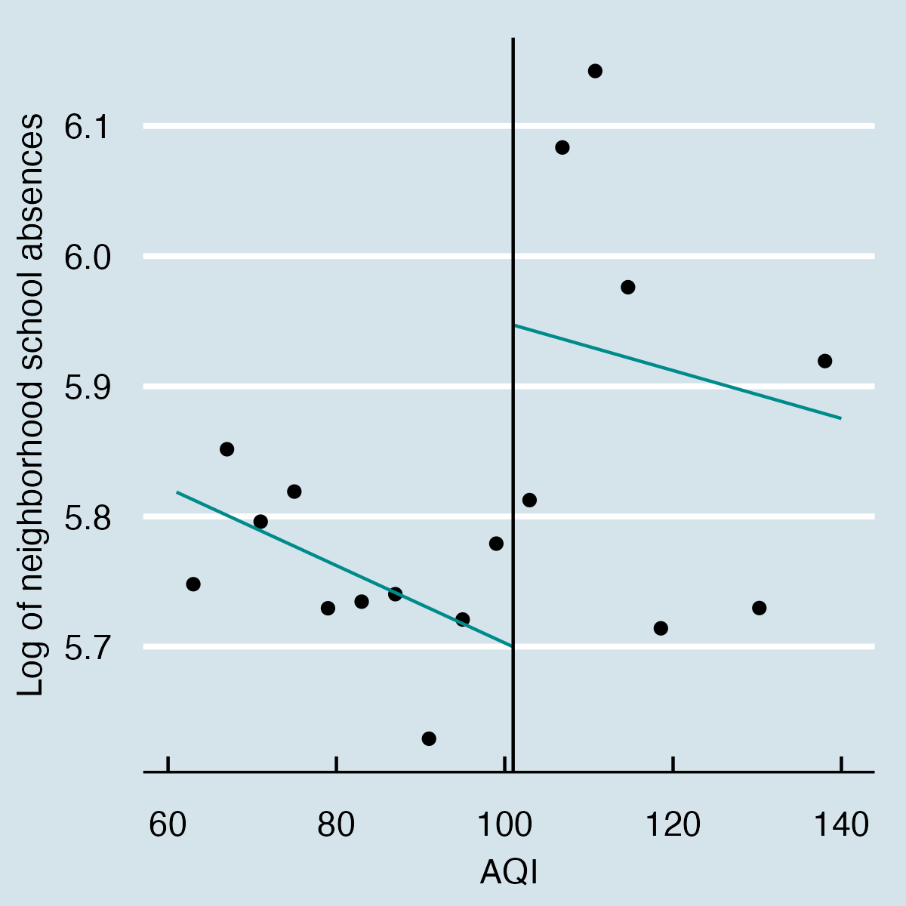

Regression Discontinuity
First, I infer causality with a regression discontinuity design (RD). The RD exploits the quasi-random allocation of air quality alerts around the emission threshold to infer causality. The central assumption is that days with forecasted AQI values very close to the alert at either side of the emission threshold only differ because of the alert and not because of concomitant factors like weather or air pollution. Under this assumption, the difference in the expected value of school absences on days just below and above the emission threshold is the local average treatment effect on the treated around the discontinuity.
The following panel shows the data-driven sharp discontinuity RD plot of school absences as a function of the AQI. The left panel contains a natural linear fit to the left and right sides of the discontinuity. In contrast, the right panel adjusts the polynomial fit with weekday, school year, month, and school period fixed effects alongside weather covariates in the form of average, minimum, and maximum temperature, precipitation, wind speed, and relative humidity. The graphical representation of the discontinuity suggests a jump in school absences after the alert.

A central assumption of the RD is that no discontinuous unobservables affect both the score and dependant variables. Unfortunately, in the case of air quality alerts in New York, this is not the case. For instance, if both the likelihood of an alert and school absences are consistently higher on Mondays, we may capture the Monday instead of the alert’s effect. To control for the discontinuous impact of this kind of temporal covariates, I run three additional specifications to the raw RD. The first one adds weekday, month, school year, school period, and holiday fixed effects, while the second one further includes average, minimum, and maximum temperature, precipitation, wind speed, and relative humidity as weather covariates. Equation RD specifies the functional form of the preferred model.
\[ Absent_{nt} = \beta D_{t}(AQI_{t} \geq 101) + \tilde{\mu}^- f(AQI_t)+ \tilde{\mu}^+ f(AQI{_t}\times D_{nt}) + W'_{nt} \Delta + \Omega_{t} + \epsilon_{t} \] In it, \(Absent_{nt}\) is the log of absent students at neighborhood \(n\) on day \(t\), \(AQI_{t}\) is the AQI forecast at time \(t\), and \(D_{t}\) the treatment indicator equal to one when the AQI is higher than one hundred units. \(f(AQI_{t}\times D_{nt})\) is a linear fit before (\(\tilde{\mu}_{-}\)) and after (\(\tilde{\mu}_{+}\)) the discontinuity; I use a linear fit because it performs better and has more accurate boundary properties than higher-order polynomials . \(W'_{nt}\) and \(\Omega_{t}\) are matrices of weather controls and time fixed-effects. The estimate of interest, \(\beta\), captures the of the alert on school absences around the emission threshold. finally, the bandwidth around the discontinuity comes from the data-driven plug-in rules based on mean squared error expansions proposed by .
The RD strategy is suitable to assess the effect of the alert as parents, schools, or neighborhoods cannot manipulate the AQI or the emission of the alert. Furthermore, there is perfect compliance between the alert’s emission and the running variable as every time the AQI forecast surpasses one hundred units, the probability of the alert jumps from zero to one. Still, there remains the possibility that New Yorkers conditional expectation of an alert would rely on the raw AQI independent of the forecast. Thus, similar to , I provide robust estimates for a fuzzy regression discontinuity design, which exploits the discontinuity in the probability of assignment to treatment to infer causality.
Besides the fuzzy RD, I perform three robustness exercises in case the fixed effects are not flexible enough to reduce the bias from correlated temporal covariates. First, I run the RD for a matched data set of treatment and control units. I match both groups with propensity score matching based on weather covariates, the weekday, and the month of the observation. Second, I estimate a two-stage RD with the residuals of a Poisson pseudo-maximum likelihood estimator panel model of school absences as a function of selected weather covariates and fixed effects. Third, I estimate a two-stage least-squares (2sls) Poisson MLE with the difference between the actual and forecasted AQI in linear and quadratic form as instruments for the alert